Console Configuration
The depth of SSL Live's configurability allows it to be completely restructured for each show. SSL Live consoles have a pool of DSP Paths which are used as the building blocks from which you design and build your console - each Path can be turned into an Input Channel, a Stem group, an Auxiliary or a Master. Stereo, LCR, 4.0 and 5.1 formats are created by 'binding' two or more DSP Paths together.
Introduction to Path Types
Full vs Dry Paths
All SSL Live consoles have Full Paths with full access to in-channel signal processing (EQ, dynamics, delay etc.).
SSL Live consoles can also have Dry Paths, which have no signal processing apart from Input Gain & Trim, Fader, Mute, Solo and two Insert Points.
Note: While Dry Paths do not have signal processing, they do have insert routing and can use SSL Live's internal Effects Rack for processing.Path Types
There are 4 main path types:
- Channels
- Stems
- Auxes
- Masters
Each path type is described in detail later in this section.
There are a few other types of signal path which are independent of the main Path pool. These include VCAs, Talkback, Solo and Matrix channels. These can all be configured using the Console Configuration page described below.
The console also contains paths that have no signal processing but are for control of external devices; DAW paths (created automatically as required) and OSC paths (created using the Console Configuration page).
Please Note: Each console model has a 'Total' number of paths available. There are also limits to the number of paths possible per path type (Full/Dry and Channel/Stem/Aux/Master). The console will prevent you from creating more paths if either of the following conditions is met:- The console's total path limit has been reached.
- The path limit for a certain path type has been reached. In this case, the console will only prevent paths of that type from being created.
Plus Processing Packs
The DSP capacity of L100, L200, L350 and L550 consoles can be expanded with the addition of a 'Plus' processing pack. This is a licensed feature; please contact your local SSL distributor for details. When enabled, the console is 'Plussed', as indicated by a symbol in the status bar. All other functionality is identical to the non-Plussed version of the console. References to L100, L200, L350 and L550 consoles therefore refer to both the Plussed and non-Plussed variants unless otherwise stated.
Console Model Summary
| L100 | L100 Plus | L200 | L200 Plus | L300 | L350 | L350 Plus | L450 | L500 | L500 Plus | L550 | L550 Plus | L650 | |||||||||||
|---|---|---|---|---|---|---|---|---|---|---|---|---|---|---|---|---|---|---|---|---|---|---|---|
| Total Full | Total Full | Total Full | Total Full | Full | Dry | Total | Full | Dry | Total | Total Full | Total Full | Full | Dry | Total | Full | Dry | Total | Full | Dry | Total | Total Full | Total Full | |
| Input Channels | 64 | 96 | 96 | 144 | 144 | 48 | 192 | 168 | 48 | 216 | 216 | 240 | 144 | 48 | 192 | 208 | 48 | 256 | 240 | 48 | 288 | 288 | 312 |
| Stems | 12 | 24 | 24 | 36 | 36 | 12 | 48 | 36 | 12 | 48 | 48 | 60 | 48 | 12 | 60 | 60 | 12 | 72 | 72 | 12 | 84 | 84 | 96 |
| Auxes | 36 | 48 | 48 | 84 | 96 | 24 | 120 | 108 | 24 | 132 | 132 | 156 | 96 | 24 | 120 | 144 | 48 | 168 | 156 | 48 | 204 | 204 | 210 |
| Masters | 4 | 6 | 6 | 8 | 12 | 6 | 18 | 12 | 6 | 18 | 18 | 24 | 24 | 6 | 30 | 24 | 6 | 30 | 24 | 6 | 30 | 30 | 32 |
| Total Max Paths | 96 | 128 | 144 | 144 | 144 | 48 | 192 | 168 | 48 | 216 | 216 | 240 | 144 | 48 | 192 | 208 | 48 | 256 | 240 | 48 | 288 | 288 | 312 |
| VCAs | 12 | 24 | 36 | 48 | |||||||||||||||||||
| Matrix | 4 x 32 ins, 12 processed outs | 4 x 32 ins, 24 processed outs | 4 x 32 ins, 36 processed outs | ||||||||||||||||||||
| Max FX Instances | 24 | 48 | 60 | 96 | |||||||||||||||||||
The following shows the path capacity and routing options for each console model in more detail:
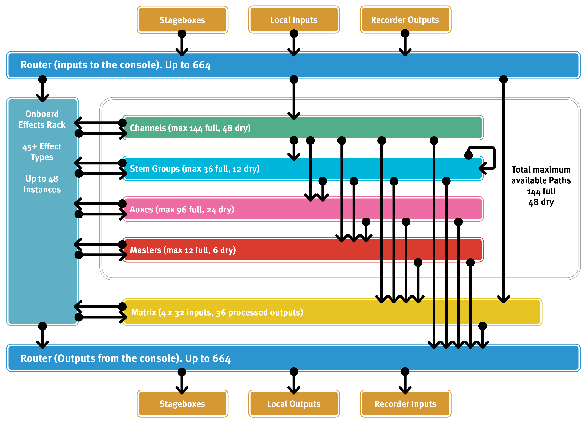
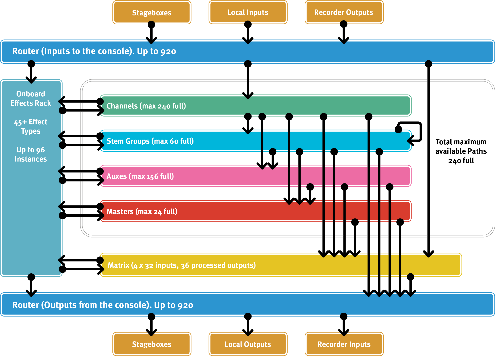
This table summarizes the distinctions between path types:
| Path type | Source types | Variable send level | Routable to output types | Full & Dry processing |
Talkback injection | ||||
|---|---|---|---|---|---|---|---|---|---|
| Stems | Auxes | Masters | Matrix, Routable destinations & Physical outputs | ||||||
| Pooled paths | Channel | Physical inputs, Routable sources* |
Y | Y | Y | Y | Y | ||
| Stem | Other Stems, Channels | Y | Y | Y | Y | Y | Y | Y | |
| Aux | Channels, Stems | Y | Y | Y | Y | Y | |||
| Master | Channels, Stems, Auxes | Y | Y | Y | |||||
| Additional paths | Talkback | Physical inputs, Routable sources* |
Y | Y | Y | Y | Full | ||
| Solo | Various console signals | Y | Full | ||||||
| Matrix | Physical inputs, Routable sources* |
Y | Y | Full (No Dynamics) |
|||||
* Physical inputs: Stageboxes, local I/O etc. Routable sources: Path outputs, Effects Rack etc.
Stems
Stem paths are for effects sends, shared signal processing, parallel processing, audio sub grouping, etc.
They share the functionality of both traditional audio group buses and Aux sends because of their independent source send levels. Think of them as the ultimate audio bus!
The power of Stems lies in their flexible sending, bussing, and/or routing. Stems can be sent to Auxes and other Stems, bussed to Masters, and routed to Matrix channels and/or directly to outputs.
Stems feature significantly more feed points than Auxes. These are: Pre Fader, Post Trim, Post Insert A, Post Insert B, Post Fader and Post All.
Tip: The order of processing blocks in a path (EQ, Compressor, Gate etc.) can be changed freely on a path-by-path basis. This includes the two Insert points. See Processing Order for more details.This can be used to great effect in conjunction with Stems, for example sending pre- and post-Compressor signals of a single vocal mic channel to the singer's own IEM mix (via Stem 1) and all other performer's mixes (via Stem 2) respectively.
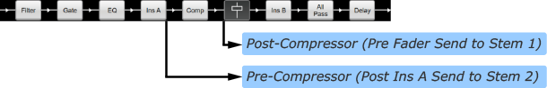
Stems differ from their Channel path equivalents in the following ways:
- You can send to them from Channels, Stems, and Auxes.
- They have no external input routing dialogue (because they are bussed to, not routed to).
- Stem Query collects all paths feeding it and fed by it, rather than just paths being fed by it. See Query for details.
Using Stems for Monitor Mixing
Stems can be useful for managing monitor mixes as intermediate buses before the Aux outputs. Some examples of how they can be used:
- Create Stems for commonly grouped channels, e.g. drum channels, percussion, brass etc. When an artist requests more or less of the 'grouped' channels, the Stem can be adjusted to their Aux mix rather than adjusting each individual channel. Different mixes can differ in their use of Stems, e.g. the drummer's mix will likely still use the individual drum channels, but all of the backing vocalist's mixes may use a pre-mixed 'drums' Stem.
- If there are many musicians that share an IEM 'pack', consider the Aux path as the pack rather the musician's mix. Instead, create the mixes on Stems and unmute the relevant Stem to the pack. This means a 'library' of mixes can be created and dynamically swapped into the Aux mix (IEM pack). The console's automation system can even be used to automate the mix changeover.
- Playback techs often like to monitor the 'dry' playback tracks and therefore do not want to hear any path processing applied. The playback channels can be bussed to a Stem Post Trim and then fed into their Aux mix along with any other sources (shout system, talkback etc.).
Auxes
Aux paths (or Aux sends) are intended for outputs that require independent mixes, such as sends to artist monitoring, communications, or subwoofers. They can also be used as traditional effects-type sends, although Stems may be better suited for those as they can be routed directly to other Auxes.
Aux paths differ from Input Channels in the following ways:
- You can only send to them from Channels and Stems; they have no input source routing dialogue.
- They cannot be sent to Stems or other Auxes, but they can be bussed to Masters or routed out (or to the Matrix).
- Aux Query collects paths feeding and fed by it, rather than paths fed by it only. See Query for details.
Auxes can be fed from source paths (Channels or Stems) Pre Fader or Post All source path processing
Masters
Master paths are the final bus of mixing. Everything that is bussed to a Master is post fader. Master path outputs are typically routed to the matrix and/or directly to external destinations.
Master paths differ from their Channel path equivalent in the following ways:
You can only bus to them from other paths; they have no input source routing dialogue.
By design as the last path in the chain, they cannot be sent to Stems, Auxes or other Masters.
Master Query collects all paths feeding it only. See Query for details.
VCAs
VCAs allow output and bus send levels of a number of paths to be controlled from a single control path. Their fader strips appear on the control surface just like paths of any other type.
In place of the meter area towards the top of the Channel View strip, there is a display of all paths which are included within that VCA, listed by path type.
Paths can be excluded from VCA mute control using their Mute Safe function, as described in the Mute section.
Assigning a path to a VCA is very similar to sending to a bus and both functions are described in the Bus Routing & VCAs section.
Pressing a VCA's Solo button will solo all paths controlled by that VCA, as if each individual path's Solo button had been pressed.
Note: Moving the VCA fader will not cause the assigned path's faders to move, but you will see the fader gain label on those paths change in relation to the VCA value.Console Configuration Page
You can edit the number of each path type in MENU > Setup > Console Configuration.
This is where the available digital signal processing is allocated to the different path types. The precise ordering of different path formats can be set, as can the point in the paths which are used to source each Auxiliary and Stem. Paths can also be named in this display.
The main part of the Console Configuration page is made up of a table displaying the number of paths of each type and format:
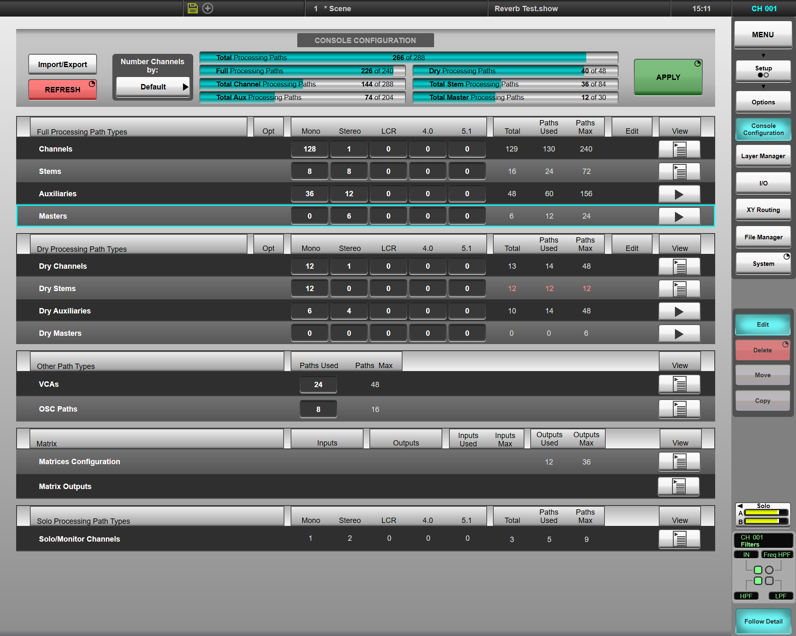
The resource bars at the top of the screen indicate how much DSP is available for Fully-processed paths, Dry path, and each of the pooled path types (Channels, Stems, Auxes and Masters). The console may be configured with any combination of these path types, up the their respective maximums. There is no danger of 'overloading' the console; the number of paths reported will turn red when the limit is reached and no further paths can be created beyond this point.
The Full Processing forms of each of the console's path types are listed towards the top of the screen, with the Dry forms below that. VCA, OSC, Matrix and Solo channels are listed towards the bottom of the screen.
Note: VCA, OSC, Matrix, and Solo channels have reduced configurability. There is nothing configurable in this screen for Talkback channels, and they are therefore not shown. Matrices are introduced further down this page.Input Channels, Auxes, Stems and Masters can be configured in mono, stereo, LCR, 4.0 or 5.1 formats, with the numbers of each format and type shown in columns. Each mono channel uses one DSP path from the resource pool. Stereo channels will use two DSP paths, LCR channels use three DSP paths, 4.0 use four DSP paths and 5.1 channels use 6 DSP paths.
To the right of each row is a series of columns indicating the number of each path type (each formatted path counts as one), the total number of DSP paths used and the maximum number of DSP paths available for each path type.
Adding/Deleting Paths
To make changes to the Configuration, touch the Edit button to the right of the page – it will go blue to indicate that the page is editable.
All numbers which are editable will now appear in a darkened box.
To change a number, double-tap it, edit the number using the keypad which appears, and press OK.
Note: If you leave the box blank, or put non-numeric characters in it, it will be outlined in red - you will need to correct this before continuing.Stems, Auxiliaries and Masters can be fed from a number of different 'feed points' within the processing path. Each bus can have a default feed point (set in the Console Config page) and also a per-path feed point that can override this default (see Bus Routing for details). The default feed points for each bus can be set from the following options:
- Stems: Post Trim, Pre Fader, Post Insert A, Post Insert B, Post Fader or Post All processing
- Auxes: Pre Fader or Post All processing (including the fader)
- Masters: Post Fader or Post All processing
Aux and Master rows can be expanded to show the two feed point options separately by using the arrow symbol in the View column for each type. The numbers in the expanded display can be edited in the normal way. Touch the View down arrow to fold the type row away again. The feed points for each Stem are shown in the expanded list view (see below).
Note: If bus paths are added without specifying a feed point, Stems and Masters will be created as Post All and Auxes will be created Pre Fader.The paths are assigned numbers in the same order in which they are added using the mono, stereo, LCR, 4.0 and 5.1 numeric text boxes. However, it is also possible to edit and add new paths of each type one-by-one.
To do this, click the list symbol in the View column. (For Auxiliaries and Masters, this symbol is only visible when they are in expanded view.)
Each path within the relevant type will be displayed in its own row, with a green 'light' indicating the current format. Touch the indicator for the required format on each path, so that it goes green. Paths that have changed will be shown with a ♦ symbol.
The bottom row of each expanded list also allows you to add a new path of that type in the chosen format to the end of the list. New paths will be shown with a ♦ symbol.
Press & hold the Apply button (top right) to make the changes.
Please Note: Navigating away from the Console Configuration page, or disengaging Edit without pressing Apply will cancel all changes.Matrix Configuration
SSL Live has four matrices. These allow you to reduce the number of crosspoints you can see to those you are likely to use, focussing in on relevant parts of the full matrix rather than having to sift through a large page of mostly redundant controls.
To configure the four matrices, click the list symbol in the View column for the Matrix area of the display.
The maximum number of matrix inputs and outputs are as follows:
Each matrix can have up to 32 inputs, independent of the configuration of other matrices.
There are a maximum of 36 outputs available (varies by console model) across the 4 matrices; they can be divided between the matrices in any way.
Note: Matrix output channels have the same Filters, EQ, Delay and All Pass processing available as Full Processing Paths (but no dynamics processing).Further Matrix configuration is described in the Matrix page.
Press & hold the Apply button (top right) to make the changes in the Console Configuration page active on the console.
Deleting, Moving & Copying Paths
Individual paths can be deleted, moved or copy within the path lists.
With the list of paths expanded, and the Edit button active, touch the grey radio button in the Edit column (to the right of the format columns) for the paths(s) in question - the button will turn red for each path selected to indicate it is being edited.
Note: Multiple paths can be marked for edit at the same time.- To delete the path(s), now press & hold the Delete button.
- To move path(s), press Move then touch the path after which you want the moved path(s) to appear.
-
To copy paths, press Copy then touch the path after which you want the copied path(s) to appear.
The copied path's name will consist of dashes - rename it by double-tapping on the name field.
The path ID column will be refreshed once the Apply function has been activated (see below).
The Copy button will become disabled if there is not enough free processing available to create new copies of the number of paths selected.
Press & hold the Apply button (top right) to make the changes in the Console Configuration page active on the console.
Editing Path Names
With a path list expanded and the Edit button engaged, double-tap the name text to open an on-screen keyboard. Type the new path name and press OK to confirm the change.
Use the Next and Previous buttons in the keyboard (Tab and Shift+Tab respectively on USB keyboards) to navigate through the path list.
Touch the list symbol again to fold the paths back into their path type row.
Press & hold the Apply button (top right) to make the changes in the Console Configuration page active on the console.
Import/Export Channel Names
SSL Live consoles can import and export Input Channel names from/to CSV files.
To do this tap Import/Export in the top left of the page. This will open a file management window, similar to the one for Showfiles and Presets.
The Copy, Move, Delete, Rename and Read Only functions work in the same way as they do in the Showfiles and Presets pages.
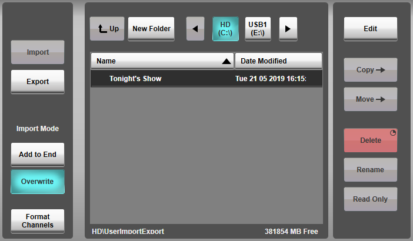
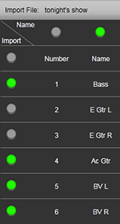
Import
Channel list spreadsheets must be saved as a CSV file to import channel names. You can save as a .CSV from all major spreadsheet applications. Save the CSV file to a USB drive and plug it into the console or a PC running SOLSA. It is not necessary to copy the CSV file to the console's internal hard drive before importing channel names.
Select the desired CSV file in the file list. A visual representation of the columns and rows in the CSV file will be displayed below. Use the green indicators to mark which columns and rows to import.
Now, choose an Import Mode. Selecting Add to End will add new channels to the end of the existing channel list in the Console Configuration page. Selecting Overwrite will delete all the existing channel names and replace them with the new names. All other existing channel settings will remain, Overwrite only replaces the name.
Then press Import.
Disengage Import/Export in the top left, to return to the Console Configuration page. The new input channel names are now listed in the Channel list.
Press and hold APPLY to make the changes.
Format Channels
The import tool can automatically format input channels to Stereo, LCR, 4.0 and 5.1.
For example: If the console reads KEYS L and KEYS R as two adjacent channels it will create a single stereo KEYS channel.
To auto-format channels, engage Format Channels before pressing Import.
For Stereo, this works if there is a capital L and R at the end of name of two adjacent channels. The remaining text in the channel name must be identical. The import mechanism can also recognise hyphens (-) or underscores (_) before the L or R.
This also works for LCR, 4.0 and 5.1 with the following endings in the correct order.
- LCR: L, C, R
- 4.0: L, R, LS, RS
- 5.1: L, C, R, LS, RS, LFE
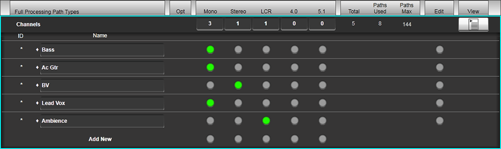
Export
To Export a list of channel names, first select a drive to export to. Once the drive is selected press Export, then name the file.
The console exports channel name lists as CSV files. The CSV file contains the channel ID number, channel name as well as listing the Input A and B routes.
Numbering Input Channels
There are two modes for numbering Input Channels. Default and Auto-Renumber.
Default means channel ID numbers are continuous, regardless of channel format (Stereo, LCR, 4.0, 5.1). When multi-channel formats are created, this can mean that the patch number from stageboxes does not match the Channel ID number on the console.
An example of Default mode:
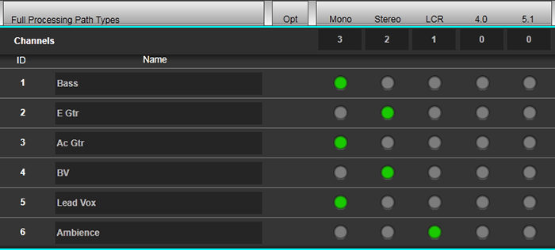
Auto-Renumber restores the sequence of input patch numbers and input channel ID numbers, so that the numbers match.
An example of Auto-Renumber mode:
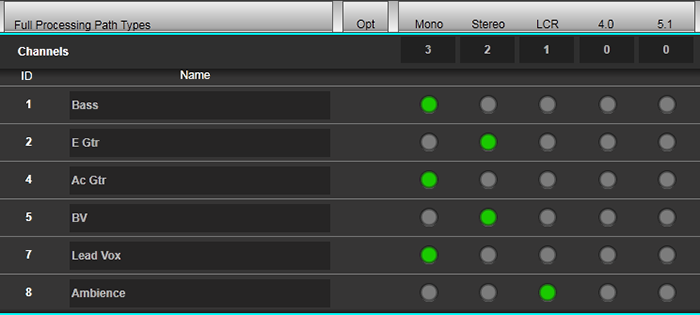
To change numbering modes go to the Number Channels by: section at the top of the page. Select either Default or Auto-Renumber from the drop down menu. Press and hold APPLY to make the changes.
Compatibility Mode
Showfiles are cross-compatible within the entire SSL Live console range, with no additional software or conversion required.
A showfile created on a larger console may be loaded onto a smaller one (e.g L500 Plus showfile onto an L300). The system will automatically enter Compatibility Mode if the showfile cannot fit within the resources available.
The console will create as many paths from the showfile as it can, and if there are more paths than the model can support, the remaining paths will be disabled. This means they do not pass audio, but they are still saved in the showfile. It is possibly to change fader position and manipulate path processing etc. on disabled paths. Disabled paths are displayed in the Channel View like this:
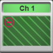
And can also be identified in Console Configuration like this:
Compatibility Mode also affects units in the Effects Rack. Disabled Effects Rack units are displayed like this:
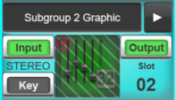
Compatibility mode may also be enabled manually by engaging the Compatibility Mode button in System Options. This mode may be used to create a showfile destined for a larger console on a smaller one that doesn't necessarily have the amount of processing that will ultimately be used. A icon will be displayed in the status bar at the top of the main screen to indicate that Compatibility Mode has been enabled but no processing is currently disabled.
In order to create more paths than the console model can support, first you must choose some existing paths to disable. To disable paths, go to the Console Configuration turn on Edit and engage the Compatibility button on the right hand side of the screen. The Edit column in the table has now changed to read Enabled. Expand the desired path type list and tap the button in the Enabled column for each path you wish to disable. A green button means enabled, an empty (grey) button means disabled. Press & hold the Apply button to confirm the changes. You can now create more enabled paths.
To disable effects, navigate to the Effect Rack page (Menu > Effects) and select the effect module you wish to disable. Press & hold its Enabled button.
When paths or effects have been disabled, the Compatibility Mode button will turn red and a icon will be displayed in the status bar. Compatibility Mode allows you to create as many paths/Effects as would fit on an L550 console.
Compatibility Mode can be turned off only after all disabled paths/FX have been either enabled, or deleted. When this has been done, disengage the Compatibility Mode button in System Options.
Any disabled paths or effects stored in the showfile will be automatically reactivated the next time the showfile is loaded on a console model with enough processing power.